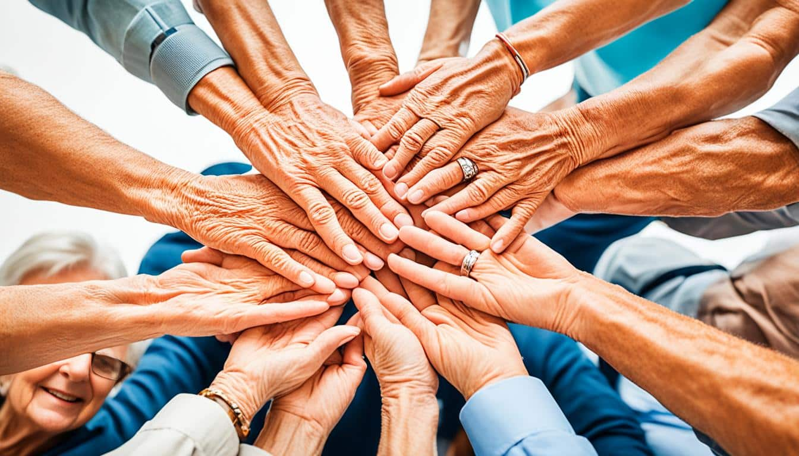
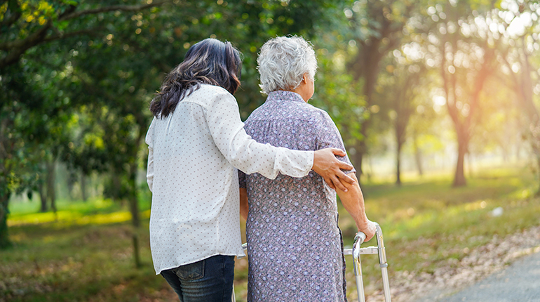

La atención a adultos mayores debe ser integral y holística, abarcando sus necesidades físicas, emocionales y sociales. Incluye desde el cuidado en casa y el apoyo emocional, hasta el acceso a programas de salud y centros gerontológicos especializados.En México, el gobierno ofrece diversos apoyos y servicios para mejorar la calidad de vida de este sector:Atención Médica Domiciliaria: A través de programas como Salud Casa por Casa, se brindan consultas médicas directamente en los domicilios de personas de 65 años en adelante.Asistencia Integral: El Sistema Nacional DIF ofrece Centros Gerontológicos y Casas Hogar con atención médica, psicológica, social y de rehabilitación, operando bajo modalidades tanto residenciales como de atención de día.Recreación y Desarrollo: El Instituto Nacional de las Personas Adultas Mayores (INAPAM) impulsa políticas de bienestar, descuentos y programas de recreación, mientras que a nivel estatal existen iniciativas para fomentar el envejecimiento digno.Apoyos Económicos: Se otorgan pensiones bimestrales diseñadas para contribuir a que las personas mayores cubran sus necesidades básicas.

Existen diferentes formas de ayudar a los adultos mayores. El apoyo físico consiste en ayudarlos a caminar o desplazarse, acompañarlos al médico, ayudarlos a cargar objetos pesados y colaborar con tareas del hogar. El apoyo emocional se brinda al escucharlos con atención, conversar y compartir tiempo con ellos, mostrar paciencia y respeto e incluirlos en actividades familiares. El apoyo tecnológico incluye enseñarles a usar teléfonos celulares, ayudarlos a realizar videollamadas, explicarles cómo utilizar aplicaciones útiles y enseñarles medidas de seguridad en internet.
Los adultos mayores tienen derecho a recibir atención médica adecuada, ser tratados con respeto y dignidad, participar en la vida familiar y social, vivir libres de violencia, abandono y discriminación, y acceder a oportunidades de recreación y aprendizaje.
La experiencia de los adultos mayores puede ayudar a las nuevas generaciones a tomar mejores decisiones. Mantener una vida activa ayuda a conservar la memoria y la salud. Las relaciones sociales frecuentes reducen el riesgo de depresión. El ejercicio moderado puede mejorar la movilidad y el bienestar. Aprender cosas nuevas, como usar tecnología o practicar un hobby, ayuda a mantener el cerebro activo.
Ayudar a los adultos mayores es una forma de reconocer todo lo que han aportado a la sociedad y a nuestras familias. Brindarles compañía, respeto y apoyo mejora su calidad de vida y fortalece los lazos entre generaciones, creando una comunidad más humana y solidaria.